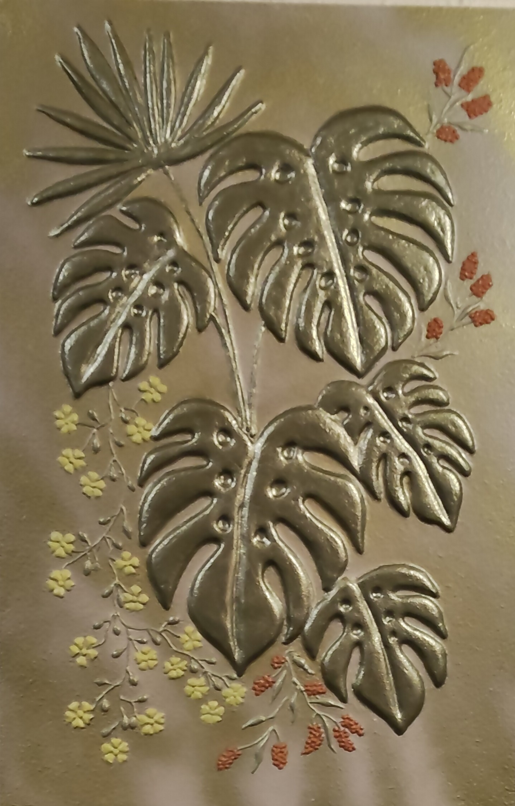

NICOLETA FILIP ART
PLANTA TROPICAL
Composición botánica vertical protagonizada por hojas tropicales de gran formato en acabado metálico oscuro, acompañadas de pequeñas flores y ramificaciones decorativas en tonos amarillo y naranja sobre un fondo dorado.
Sobre la obra
PLANTA TROPICAL presenta una composición botánica vertical formada por varias hojas tropicales de formas lobuladas y diferentes tamaños.
Las hojas presentan un acabado metálico oscuro, mientras que pequeñas flores y ramificaciones decorativas en tonos amarillo y naranja completan la composición sobre un fondo dorado.
Presentación artística
Las hojas se distribuyen en diferentes tamaños y direcciones, incorporando detalles de volumen y nervaduras marcadas que aportan profundidad a la composición.
El conjunto se completa con pequeñas flores y elementos ramificados en tonos amarillo y naranja, creando un contraste cromático sobre el fondo dorado.
Ficha técnica
- Año
- 2026
- Dimensiones
- 40 × 60 cm
- Soporte
- Madera
- Técnica
- Técnica estándar.
- Categoría
- Botánica
Si deseas recibir información sobre esta obra, puedes solicitarla directamente.
SOLICITAR INFORMACIÓN →